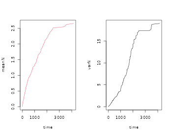

Recurrent events
Klaus Holst & Thomas Scheike
2021-09-05
Source:vignettes/recurrent-events.Rmd
recurrent-events.RmdOverview
For recurrent events data it is often of interest to compute basic descriptive quantities as a first go at getting some basic understanding of the phenonmenon studied. We here demonstrate how one can compute
- the marginal mean
- the variance
- the probability of exceeding k events
- do a Cox type regression for the marginal mean
In addition several tools can be used for simulating recurrent events and bivariate recurrent events data, in the case with a possible terminating event.
For bivariate recurrent events we also compute summary measures that describe their dependence such as
- the covariance
- directional dependence
- the bivariate probability of exceeding \((k_1,k_2)\) events
We also show how to improve the efficiency of recurrents events marginal mean.
Simulation of recurrents events
We start by simulating some recurrent events data with two type of events with cumulative hazards
- \(\Lambda_1(t)\) (rate among survivors)
- \(\Lambda_2(t)\) (rate among survivors)
- \(\Lambda_D(t)\)
where we consider types 1 and 2 and with a rate of the terminal event given by \(\Lambda_D(t)\). We let the events be independent, but could also specify a random effects structure to generate dependence.
When simulating data we can impose various random-effects structures to generate dependence
Dependence=0: The intensities can be independent.
- Dependence=1: We can one gamma distributed random effects \(Z\). Then the intensities are
- \(Z \lambda_1(t)\)
- \(Z \lambda_2(t)\)
- \(Z \lambda_D(t)\)
- Dependence=2: We can draw normally distributed random effects \(Z_1,Z_2,Z_d\) were the variance (var.z) and correlation can be specified (cor.mat). Then the intensities are
- \(\exp(Z_1) \lambda_1(t)\)
- \(\exp(Z_2) \lambda_2(t)\)
- \(\exp(Z_3) \lambda_D(t)\)
- Dependence=3: We can draw gamma distributed random effects \(Z_1,Z_2,Z_d\) were the sum-structure can be speicifed via a matrix cor.mat. We compute \(\tilde Z_j = \sum_k Z_k^{cor.mat(j,k)}\) for \(j=1,2,3\).
Then the intensities are- \(\tilde Z_1 \lambda_1(t)\)
- \(\tilde Z_2 \lambda_2(t)\)
- \(\tilde Z_3 \lambda_D(t)\)
We return to how to run the different set-ups later and start by simulating independent processes.
Utility functions
We here mention two utility functions
- tie.breaker for breaking ties among jump-times which is expected in the functions below.
- count.history that counts the number of jumps previous for each subject that is \(N_1(t-)\) and \(N_2(t-)\).
Marginal Mean
We start by estimating the marginal mean \(E(N_1(t \wedge D))\) where \(D\) is the timing of the terminal event.
This is based on a rate model for
- the type 1 events \(\sim E(dN_1(t) | D > t)\)
- the terminal event \(\sim E(dN_d(t) | D > t)\)
and is defined as \(\mu_1(t)=E(N_1^*(t))\) \[\begin{align} \int_0^t S(u) d R_1(u) \end{align}\] where \(S(t)=P(D \geq t)\) and \(dR_1(t) = E(dN_1^*(t) | D > t)\)
and can therefore be estimated by a
- Kaplan-Meier estimator, \(\hat S(u)\)
- Nelson-Aalen estimator for \(R_1(t)\)
\[\begin{align} \hat R_1(t) & = \sum_i \int_0^t \frac{1}{Y_\bullet (s)} dN_{1i}(s) \end{align}\] where \(Y_{\bullet}(t)= \sum_i Y_i(t)\) such that the estimator is \[\begin{align} \hat \mu_1(t) & = \int_0^t \hat S(u) d\hat R_1(u). \end{align}\]
Cook & Lawless (1997), and developed further in Gosh & Lin (2000).
The variance can be estimated based on the asymptotic expansion of \(\hat \mu_1(t) - \mu_1(t)\) \[\begin{align*} & \sum_i \int_0^t \frac{S(s)}{\pi(s)} dM_{i1} - \mu_1(t) \int_0^t \frac{1}{\pi(s)} dM_i^d + \int_0^t \frac{\mu_1(s) }{\pi(s)} dM_i^d, \end{align*}\]
with mean-zero processes
- \(M_i^d(t) = N_i^D(t)- \int_0^t Y_i(s) d \Lambda^D(s)\),
- \(M_{i1}(t) = N_{i1}(t) - \int_0^t Y_{i}(s) dR_1(s)\).
as in Gosh & Lin (2000)
Generating data
We start by generating some data to illustrate the computation of the marginal mean
data(base1cumhaz)
data(base4cumhaz)
data(drcumhaz)
ddr <- drcumhaz
base1 <- base1cumhaz
base4 <- base4cumhaz
rr <- simRecurrent(1000,base1,death.cumhaz=ddr)
rr$x <- rnorm(nrow(rr))
rr$strata <- floor((rr$id-0.01)/500)
dlist(rr,.~id| id %in% c(1,7,9))
#> id: 1
#> entry time status rr dtime fdeath death start stop x strata
#> 1 0 133.1 0 1 133.1 1 1 0 133.1 1.185 0
#> attr(,"class")
#> [1] matrix array
#> ------------------------------------------------------------
#> id: 7
#> entry time status rr dtime fdeath death start stop x strata
#> 7 0.0 813.3 1 1 1729 1 0 0.0 813.3 1.5495 0
#> 1004 813.3 1288.4 1 1 1729 1 0 813.3 1288.4 1.0535 0
#> 1658 1288.4 1315.4 1 1 1729 1 0 1288.4 1315.4 1.5330 0
#> 2150 1315.4 1449.4 1 1 1729 1 0 1315.4 1449.4 0.8944 0
#> 2539 1449.4 1726.1 1 1 1729 1 0 1449.4 1726.1 -0.1931 0
#> 2851 1726.1 1729.4 0 1 1729 1 1 1726.1 1729.4 0.4081 0
#> attr(,"class")
#> [1] matrix array
#> ------------------------------------------------------------
#> id: 9
#> entry time status rr dtime fdeath death start stop x strata
#> 9 0.0 433.5 1 1 5110 0 0 0.0 433.5 -0.4660 0
#> 1006 433.5 2451.1 1 1 5110 0 0 433.5 2451.1 1.0647 0
#> 1659 2451.1 3629.7 1 1 5110 0 0 2451.1 3629.7 -0.2506 0
#> 2151 3629.7 3644.7 1 1 5110 0 0 3629.7 3644.7 -0.6748 0
#> 2540 3644.7 3695.8 1 1 5110 0 0 3644.7 3695.8 0.6510 0
#> 2852 3695.8 3890.7 1 1 5110 0 0 3695.8 3890.7 -0.2033 0
#> 3112 3890.7 5110.0 0 1 5110 0 0 3890.7 5110.0 -1.6981 0
#> attr(,"class")
#> [1] matrix arrayThe status variable keeps track of the recurrent evnts and their type, and death the timing of death.
To compute the marginal mean we simly estimate the two rates functions of the number of events of interest and death by using the phreg function (to start without covariates). Then the estimates are combined with standard error computation in the recurrentMarginal function
# to fit non-parametric models with just a baseline
xr <- phreg(Surv(entry,time,status)~cluster(id),data=rr)
dr <- phreg(Surv(entry,time,death)~cluster(id),data=rr)
par(mfrow=c(1,3))
bplot(dr,se=TRUE)
title(main="death")
bplot(xr,se=TRUE)
# robust standard errors
rxr <- robust.phreg(xr,fixbeta=1)
bplot(rxr,se=TRUE,robust=TRUE,add=TRUE,col=4)
# marginal mean of expected number of recurrent events
out <- recurrentMarginal(xr,dr)
bplot(out,se=TRUE,ylab="marginal mean",col=2)
We can also extract the estimate in different time-points
summary(out,times=c(1000,2000))
#> times mean se-mean CI-2.5% CI-97.5%
#> 1 1000 1.207 0.04227054 1.126929 1.292760
#> 2 2000 1.922 0.06531928 1.798145 2.054386The marginal mean can also be estimated in a stratified case:
xr <- phreg(Surv(entry,time,status)~strata(strata)+cluster(id),data=rr)
dr <- phreg(Surv(entry,time,death)~strata(strata)+cluster(id),data=rr)
par(mfrow=c(1,3))
bplot(dr,se=TRUE)
title(main="death")
bplot(xr,se=TRUE)
rxr <- robust.phreg(xr,fixbeta=1)
bplot(rxr,se=TRUE,robust=TRUE,add=TRUE,col=1:2)
out <- recurrentMarginal(xr,dr)
bplot(out,se=TRUE,ylab="marginal mean",col=1:2)
Furhter, if we adjust for covariates for the two rates we can still do predictions of marginal mean, what can be plotted is the baseline marginal mean, that is for the covariates equal to 0 for both models. Predictions for specific covariates can also be obtained with the recmarg (recurren marginal mean used solely for predictions without standard error computation).
# cox case
xr <- phreg(Surv(entry,time,status)~x+cluster(id),data=rr)
dr <- phreg(Surv(entry,time,death)~x+cluster(id),data=rr)
par(mfrow=c(1,3))
bplot(dr,se=TRUE)
title(main="death")
bplot(xr,se=TRUE)
rxr <- robust.phreg(xr)
bplot(rxr,se=TRUE,robust=TRUE,add=TRUE,col=1:2)
out <- recurrentMarginal(xr,dr)
bplot(out,se=TRUE,ylab="marginal mean",col=1:2)
# predictions witout se's
outX <- recmarg(xr,dr,Xr=1,Xd=1)
bplot(outX,add=TRUE,col=3)
Improving efficiency
We now simulate some data where there is strong heterogenity such that we can improve the efficiency for censored survival data.
rr <- simRecurrentII(5000,base1,base4,death.cumhaz=ddr,cens=3/5000,dependence=4,var.z=1)
rr <- count.history(rr)
# cox case
xr <- phreg(Surv(entry,time,status==1)~cluster(id),data=rr)
dr <- phreg(Surv(entry,time,death)~cluster(id),data=rr)
out <- recurrentMarginal(xr,dr)
times <- 500*(1:10)
recEFF1 <- recurrentMarginalAIPCW(rr,times,start="entry",stop="time",status="status",death="death",cause=1,terms=1)
recEFF14 <- recurrentMarginalAIPCW(rr,times,start="entry",stop="time",status="status",death="death",cause=1,terms=1:4)
bplot(out,se=TRUE,ylab="marginal mean",col=2)
k <- 1
for (t in times) {
ci1 <- c(recEFF1$muPAt[k]-1.96*recEFF1$semuPAt[k],
recEFF1$muPAt[k]+1.96*recEFF1$semuPAt[k])
lines(rep(t,2)-20,ci1,col=1,lty=2)
ci14 <- c(recEFF14$muPAt[k]-1.96*recEFF14$semuPAt[k],
recEFF14$muPAt[k]+1.96*recEFF14$semuPAt[k])
lines(rep(t,2)+20,ci14,col=3,lty=3)
k <- k+1
}
legend("bottomright",c("Eff-small","Eff-large"),lty=2:3,col=c(1,3))
with( recEFF14, cbind(times,muP,semuP,muPAt,semuPAt,semuPAt/semuP))
#> times muP semuP muPAt semuPAt
#> [1,] 500 0.7900308 0.01998113 0.7877685 0.01989930 0.9959044
#> [2,] 1000 1.1805813 0.03073517 1.1745455 0.03033522 0.9869872
#> [3,] 1500 1.5458783 0.04343038 1.5379056 0.04217803 0.9711643
#> [4,] 2000 1.8657064 0.05605839 1.8534433 0.05364115 0.9568801
#> [5,] 2500 2.0977225 0.06731111 2.0774959 0.06331096 0.9405722
#> [6,] 3000 2.3295890 0.08090458 2.3020009 0.07468060 0.9230701
#> [7,] 3500 2.5302409 0.09375891 2.4941233 0.08499066 0.9064809
#> [8,] 4000 2.7226356 0.11166060 2.6762896 0.09870848 0.8840046
#> [9,] 4500 2.8183751 0.12198167 2.7703477 0.10715645 0.8784636
#> [10,] 5000 2.8625077 0.12489274 2.8139108 0.10983466 0.8794319
with( recEFF1, cbind(times,muP,semuP,muPAt,semuPAt,semuPAt/semuP))
#> times muP semuP muPAt semuPAt
#> [1,] 500 0.7900308 0.01998113 0.7877783 0.01990158 0.9960187
#> [2,] 1000 1.1805813 0.03073517 1.1760556 0.03034430 0.9872825
#> [3,] 1500 1.5458783 0.04343038 1.5395675 0.04220712 0.9718340
#> [4,] 2000 1.8657064 0.05605839 1.8574160 0.05369177 0.9577830
#> [5,] 2500 2.0977225 0.06731111 2.0845827 0.06340969 0.9420390
#> [6,] 3000 2.3295890 0.08090458 2.3152442 0.07490363 0.9258269
#> [7,] 3500 2.5302409 0.09375891 2.5113033 0.08536411 0.9104639
#> [8,] 4000 2.7226356 0.11166060 2.7046847 0.09938874 0.8900968
#> [9,] 4500 2.8183751 0.12198167 2.8091830 0.10798346 0.8852433
#> [10,] 5000 2.8625077 0.12489274 2.8548534 0.11058939 0.8854749Regression models for the marginal mean
One can also do regression model, using the model \[\begin{align*} E(N_1(t) | X) & = \Lambda_0(t) \exp(X^T \beta) \end{align*}\] then Ghost-Lin suggested IPCW score equations that are implemented in the recreg function of mets.
First we generate data that from a cox model with \(\beta=(-0.3,0.3)\)
rr <- mets:::simMarginalMeanCox(10000,cens=3/5000,Lam1=base1,LamD=ddr,beta1=c(0.3,-0.3),betad=c(-0.3,0.3))
out <- recreg(EventCens(start,stop,statusG,cens)~X1+X2+cluster(id),data=rr,cause=1,death.code=2)
outs <- recreg(EventCens(start,stop,statusG,cens)~X1+X2+cluster(id),data=rr,cause=1,death.code=2,cens.model=~strata(X1g,X2g))
summary(out)$coef
#> Estimate S.E. dU^-1/2 P-value
#> X1 0.3468882 0.04662299 0.03658079 1.004698e-13
#> X2 -0.3806577 0.04670614 0.03674118 3.637579e-16
summary(outs)$coef
#> Estimate S.E. dU^-1/2 P-value
#> X1 0.3211903 0.04414868 0.03659178 3.459185e-13
#> X2 -0.3594566 0.04422745 0.03675239 4.383964e-16We note that for the extended censoring model we gain a little efficiency and that the estimates are close to the true values.
Other marginal properties
The mean is a useful summary measure but it is very easy and useful to look at other simple summary measures such as the probability of exceeding \(k\) events
-
\(P(N_1^*(t) \ge k)\)
- cumulative incidence of \(T_{k} = \inf \{ t: N_1^*(t)=k \}\) with competing \(D\).
that is thus equivalent to a certain cumulative incidence of \(T_k\) occurring before \(D\). We denote this cumulative incidence as \(\hat F_k(t)\).
We note also that \(N_1^*(t)^2\) can be written as \[\begin{align*} \sum_{k=0}^K \int_0^t I(D > s) I(N_1^*(s-)=k) f(k) dN_1^*(s) \end{align*}\] with \(f(k)=(k+1)^2 - k^2\), such that its mean can be written as \[\begin{align*} \sum_{k=0}^K \int_0^t S(s) f(k) P(N_1^*(s-)= k | D \geq s) E( dN_1^*(s) | N_1^*(s-)=k, D> s) \end{align*}\] and estimated by \[\begin{align*} \tilde \mu_{1,2}(t) & = \sum_{k=0}^K \int_0^t \hat S(s) f(k) \frac{Y_{1\bullet}^k(s)}{Y_\bullet (s)} \frac{1}{Y_{1\bullet}^k(s)} d N_{1\bullet}^k(s)= \sum_{i=1}^n \int_0^t \hat S(s) f(N_{i1}(s-)) \frac{1}{Y_\bullet (s)} d N_{i1}(s), \end{align*}\] That is very similar to the “product-limit” estimator for \(E( (N_1^*(t))^2 )\) \[\begin{align} \hat \mu_{1,2}(t) & = \sum_{k=0}^K k^2 ( \hat F_{k}(t) - \hat F_{k+1}(t) ). \end{align}\]
We use the esimator of the probabilty of exceeding “k” events based on the fact that \(I(N_1^*(t) \geq k)\) is equivalent to \[\begin{align*} \int_0^t I(D > s) I(N_1^*(s-)=k-1) dN_1^*(s), \end{align*}\] suggesting that its mean can be computed as \[\begin{align*} \int_0^t S(s) P(N_1^*(s-)= k-1 | D \geq s) E( dN_1^*(s) | N_1^*(s-)=k-1, D> s) \end{align*}\] and estimated by \[\begin{align*} \tilde F_k(t) = \int_0^t \hat S(s) \frac{Y_{1\bullet}^{k-1}(s)}{Y_\bullet (s)} \frac{1}{Y_{1\bullet}^{k-1}(s)} d N_{1\bullet}^{k-1}(s). \end{align*}\]
To compute these estimators we need to set up the data by computing the number of previous events of type “1” by the count.history function
###cor.mat <- corM <- rbind(c(1.0, 0.6, 0.9), c(0.6, 1.0, 0.5), c(0.9, 0.5, 1.0))
rr <- simRecurrentII(5000,base1,base4,death.cumhaz=ddr,cens=3/5000,dependence=4,var.z=1)
rr <- count.history(rr)
dtable(rr,~death+status)
#>
#> status 0 1 2
#> death
#> 0 2173 6965 724
#> 1 2827 0 0
oo <- prob.exceedRecurrent(rr,1)
bplot(oo)
We can also look at the mean and variance based on the estimators just described

We could also use the product-limit estimator to estimate the probability of exceeding “k” events, and then standard errors are also returned:
oop <- prob.exceed.recurrent(rr,1)
bplot(oo)
matlines(oop$times,oop$prob,type="l")
summaryTimeobject(oop$times,oop$prob,se.mu=oop$se.prob,times=1000)
#> times mean se-mean CI-2.5% CI-97.5%
#> N=0 1000 0.5135839727 0.0077508270 4.986148e-01 0.529002507
#> exceed>=1 1000 0.4864160273 0.0077508270 4.714592e-01 0.501847368
#> exceed>=2 1000 0.2791802631 0.0072649551 2.652980e-01 0.293788959
#> exceed>=3 1000 0.1548328609 0.0059596102 1.435818e-01 0.166965600
#> exceed>=4 1000 0.0953205692 0.0049028842 8.617943e-02 0.105431313
#> exceed>=5 1000 0.0597833007 0.0039950674 5.244410e-02 0.068149577
#> exceed>=6 1000 0.0364443702 0.0031823858 3.071148e-02 0.043247421
#> exceed>=7 1000 0.0215738650 0.0024797742 1.722210e-02 0.027025254
#> exceed>=8 1000 0.0160412772 0.0021940205 1.226917e-02 0.020973110
#> exceed>=9 1000 0.0096320548 0.0017332910 6.769275e-03 0.013705526
#> exceed>=10 1000 0.0055502228 0.0013121492 3.491973e-03 0.008821651
#> exceed>=11 1000 0.0041124211 0.0011449285 2.382936e-03 0.007097130
#> exceed>=12 1000 0.0018178741 0.0007482175 8.113569e-04 0.004073012
#> exceed>=13 1000 0.0008180219 0.0004750604 2.620757e-04 0.002553308
#> exceed>=14 1000 0.0008515012 0.0004948700 2.725714e-04 0.002660052
#> exceed>=15 1000 0.0008865533 0.0005167437 2.828508e-04 0.002778768
#> exceed>=16 1000 0.0005754358 0.0004117978 1.415280e-04 0.002339653
#> exceed>=17 1000 0.0005899438 0.0004230969 1.446549e-04 0.002405958
#> exceed>=18 1000 0.0002465672 0.0002465103 3.474678e-05 0.001749669
#> exceed>=19 1000 0.0002486972 0.0002486380 3.504745e-05 0.001764759
#> exceed>=20 1000 0.0002514304 0.0002513690 3.543303e-05 0.001784132
#> exceed>=21 1000 0.0002644166 0.0002643526 3.726299e-05 0.001876289
#> exceed>=22 1000 0.0002839154 0.0002838369 4.001357e-05 0.002014516
#> exceed>=23 1000 0.0002883495 0.0002882585 4.064156e-05 0.002045822
#> exceed>=24 1000 0.0003054324 0.0003053305 4.305089e-05 0.002166947
#> exceed>=25 1000 0.0003118949 0.0003117901 4.396199e-05 0.002212786
#> exceed>=26 1000 0.0003151674 0.0003150598 4.442368e-05 0.002235981
#> exceed>=27 1000 0.0003295971 0.0003294816 4.645844e-05 0.002338311
#> exceed>=28 1000 0.0003400618 0.0003399308 4.793673e-05 0.002412389
#> exceed>=29 1000 0.0003403236 0.0003401851 4.797568e-05 0.002414143
#> exceed>=30 1000 0.0000000000 0.0000000000 NaN NaN
#> exceed>=31 1000 0.0000000000 0.0000000000 NaN NaN
#> exceed>=32 1000 0.0000000000 0.0000000000 NaN NaN
#> exceed>=33 1000 0.0000000000 0.0000000000 NaN NaNWe note from the plot that the estimates are quite similar.
Finally, we make a plot with 95% confidence intervals
matplot(oop$times,oop$prob,type="l")
for (i in seq(ncol(oop$prob)))
plotConfRegion(oop$times,cbind(oop$se.lower[,i],oop$se.upper[,i]),col=i)
Multiple events
We now generate recurrent events with two types of events. We start by generating data as before where all events are independent.
rr <- simRecurrent(1000,base1,cumhaz2=base4,death.cumhaz=ddr)
#> Warning in regularize.values(x, y, ties, missing(ties), na.rm = na.rm):
#> collapsing to unique 'x' values
rr <- count.history(rr)
dtable(rr,~death+status)
#>
#> status 0 1 2
#> death
#> 0 118 2823 440
#> 1 882 0 0Based on this we can estimate also the joint distribution function, that is the probability that \((N_1(t) \geq k_1, N_2(t) \geq k_2)\)
# Bivariate probability of exceeding
oo <- prob.exceedBiRecurrent(rr,1,2,exceed1=c(1,5,10),exceed2=c(1,2,3))
with(oo, matplot(time,pe1e2,type="s"))
nc <- ncol(oo$pe1e2)
legend("topleft",legend=colnames(oo$pe1e2),lty=1:nc,col=1:nc)
Dependence between events: Covariance
The dependence can also be summarised in other ways. For example by computing the covariance and comparing it to the covariance under the assumption of independence among survivors.
Covariance among two types of events \[\begin{align} \rho(t) & = \frac{ E(N_1^*(t) N_2^*(t) ) - \mu_1(t) \mu_2(t) }{ \mbox{sd}(N_1^*(t)) \mbox{sd}(N_2^*(t)) } \end{align}\] where \(E(N_1^*(t) N_2^*(t))\) can be computed as \[\begin{align*} E(N_1^*(t) N_2^*(t)) & = E( \int_0^t N_1^*(s-) dN_2^*(s) ) + E( \int_0^t N_2^*(s-) dN_1^*(s) ) \end{align*}\]
Recall that we might have a terminal event present such that we only see \(N_1^*(t \wedge D)\) and \(N_2^*(t \wedge D)\).
To compute the covariance we thus compute \[\begin{align*} E(\int_0^t N_1^*(s-) dN_2^*(s) ) & = \sum_k E( \int_0^t k I(N_1^*(s-)=k) I(D \geq s) dN_2^*(s) ) \end{align*}\] \[\begin{align*} = \sum_k \int_0^t S(s) k P(N_1^*(s-)= k | D \geq s) E( dN_2^*(s) | N_1^*(s-)=k, D \geq s) \end{align*}\] estimated by \[\begin{align*} & \sum_k \int_0^t \hat S(s) k \frac{Y_1^k(s)}{Y_\bullet (s)} \frac{1}{Y_1^k(s)} d \tilde N_{2,k}(s), \end{align*}\] * \(Y_j^k(t) = \sum Y_i(t) I( N_{ji}^*(s-)=k)\) for \(j=1,2\), * \(\tilde N_{j,k}(t) = \sum_i \int_0^t I(N_{ij^o}(s-)=k) dN_{ij}(s)\) * \(j^o\) gives the other type so that \(1^o=2\) and \(2^o=1\).
We thus estimate $ E(N_1^(t) N_2^(t))$ by \[\begin{align*} \sum_k \int_0^t \hat S(s) k \frac{Y_1^k(s)}{Y_\bullet (s)} \frac{1}{Y_1^k(s)} d \tilde N_{2,k}(s) + \sum_k \int_0^t \hat S(s) k \frac{Y_2^k(s)}{Y_\bullet (s)} \frac{1}{Y_2^k(s)} d \tilde N_{1,k}(s). \end{align*}\]
- Without terminating event covariance is a useful nonparametric measure.
- With terminating event dependence can be generated terminating event.
- In reality what is of interest would be independence among survivors that is if
- \(N_1\) is not predicitive for \(N_2\) \[\begin{align} E( dN_2^*(t) | N_1^*(t-)=k, D \geq t) = E( dN_2^*(t) | D \geq t) \end{align}\]
- \(N_2\) is not predicitive for \(N_1\) \[\begin{align} E( dN_1^*(t) | N_2^*(t-)=k, D \geq t) = E( dN_1^*(t) | D \geq t) \end{align}\]
If the two processes are independent among survivors then \[\begin{align} E( dN_2^*(t) | N_1^*(t-)=k, D \geq t) = E( dN_2^*(t) | D \geq t) \end{align}\] so \[\begin{align*} E( \int_0^t N_1^*(s-) dN_2^*(s) ) & = \int_0^t S(s) E(N_1^*(s-) | D \geq s) E( dN_2^*(s) | D \geq s) \end{align*}\] and \[\begin{align*} \int_0^t \hat S(s) \{ \sum_k k \frac{Y_1^k(s)}{Y_\bullet (s)} \} \frac{1}{Y_\bullet (s)} dN_{2\bullet}(s), \end{align*}\] where \(N_{j\bullet}(t) = \sum_i \int_0^t dN_{j,i}(s)\).
Under the independence \(E(N_1^*(t) N_2^*(t))\) is estimated \[\begin{align*} \int_0^t \hat S(s) \{ \sum_k k \frac{Y_1^k(s)}{Y_\bullet (s)} \} \frac{1}{Y_\bullet (s)} dN_{2\bullet}(s) + \int_0^t \hat S(s) \{ \sum_k k \frac{Y_2^k(s)}{Y_\bullet (s)} \} \frac{1}{Y_\bullet (s)} dN_{1\bullet}(s). \end{align*}\]
Both estimators, \(\hat E(N_1^*(t) N_2^*(t))\) and \(\hat E_I(N_1^*(t) N_2^*(t))\), as well as \(\hat E(N_1^*(t))\) and \(\hat E(N_2^*(t))\), have asymptotic expansions that can be written as a sum of iid processes, similarly to the arguments of Ghosh & Lin 2000, \(\sum_i \Psi_i(t)\).
We here, however, use a simple block bootstrap to get standard errors.
We can thus estimate the standard errors and of the estimators and their difference \(\hat E(N_1^*(t) N_2^*(t))- \hat E_I(N_1^*(t) N_2^*(t))\).
Note that we have terms for whether * \(N_1\) is predicitive for \(N_2\) * N1 -> N2 : \(E( \int_0^t N_1^*(s-) dN_2^*(s) )\) * this is equivalent to a weighted log-rank test * \(N_2\) is predicitive for \(N_1\) * N2 -> N1 : \(E( \int_0^t N_2^*(s-) dN_1^*(s) )\) * this is equivalent to a weighted log-rank test
rr$strata <- 1
dtable(rr,~death+status)
#>
#> status 0 1 2
#> death
#> 0 118 2823 440
#> 1 882 0 0
covrp <- covarianceRecurrent(rr,1,2,status="status",death="death",
start="entry",stop="time",id="id",names.count="Count")
par(mfrow=c(1,3))
plot(covrp)
# with strata, each strata in matrix column, provides basis for fast Bootstrap
covrpS <- covarianceRecurrentS(rr,1,2,status="status",death="death",
start="entry",stop="time",strata="strata",id="id",names.count="Count")Bootstrap standard errors for terms
First fitting the model again to get our estimates of interst, and then computing them for some specific time-points
times <- seq(500,5000,500)
coo1 <- covarianceRecurrent(rr,1,2,status="status",start="entry",stop="time")
#
mug <- Cpred(cbind(coo1$time,coo1$EN1N2),times)[,2]
mui <- Cpred(cbind(coo1$time,coo1$EIN1N2),times)[,2]
mu2.1 <- Cpred(cbind(coo1$time,coo1$mu2.1),times)[,2]
mu2.i <- Cpred(cbind(coo1$time,coo1$mu2.i),times)[,2]
mu1.2 <- Cpred(cbind(coo1$time,coo1$mu1.2),times)[,2]
mu1.i <- Cpred(cbind(coo1$time,coo1$mu1.i),times)[,2]
cbind(times,mu2.1,mu2.i)
#> times mu2.1 mu2.i
#> [1,] 500 0.04601324 0.0469160
#> [2,] 1000 0.12705524 0.1222740
#> [3,] 1500 0.29919770 0.2835838
#> [4,] 2000 0.43135081 0.4166259
#> [5,] 2500 0.58158096 0.5852313
#> [6,] 3000 0.84804339 0.8321718
#> [7,] 3500 1.19574502 1.2019577
#> [8,] 4000 1.30500870 1.3291303
#> [9,] 4500 1.37519751 1.3922222
#> [10,] 5000 1.51861512 1.5428956
cbind(times,mu1.2,mu1.i)
#> times mu1.2 mu1.i
#> [1,] 500 0.03200902 0.04064835
#> [2,] 1000 0.10204628 0.11504194
#> [3,] 1500 0.21613882 0.23963895
#> [4,] 2000 0.38233417 0.39337191
#> [5,] 2500 0.50852920 0.53313875
#> [6,] 3000 0.68783945 0.70336553
#> [7,] 3500 0.87422247 0.88788963
#> [8,] 4000 1.06669018 1.08096281
#> [9,] 4500 1.19001756 1.19203550
#> [10,] 5000 1.29633583 1.28547399To get the bootstrap standard errors there is a quick memory demanding function (with S for speed and strata) BootcovariancerecurrenceS and slow function that goes through the loops in R Bootcovariancerecurrence.
bt1 <- BootcovariancerecurrenceS(rr,1,2,status="status",start="entry",stop="time",K=100,times=times)
#bt1 <- Bootcovariancerecurrence(rr,1,2,status="status",start="entry",stop="time",K=K,times=times)
output <- list(bt1=bt1,mug=mug,mui=mui,
bse.mug=bt1$se.mug,bse.mui=bt1$se.mui,
dmugi=mug-mui,
bse.dmugi=apply(bt1$EN1N2-bt1$EIN1N2,1,sd),
mu2.1 = mu2.1 , mu2.i = mu2.i , dmu2.i=mu2.1-mu2.i,
mu1.2 = mu1.2 , mu1.i = mu1.i , dmu1.i=mu1.2-mu1.i,
bse.mu2.1=apply(bt1$mu2.i,1,sd), bse.mu2.1=apply(bt1$mu2.1,1,sd),
bse.dmu2.i=apply(bt1$mu2.1-bt1$mu2.i,1,sd),
bse.mu1.2=apply(bt1$mu1.2,1,sd), bse.mu1.i=apply(bt1$mu1.i,1,sd),
bse.dmu1.i=apply(bt1$mu1.2-bt1$mu1.i,1,sd)
)We then look at the test for overall dependence in the different time-points. We here have no suggestion of dependence.
tt <- output$dmugi/output$bse.dmugi
cbind(times,2*(1-pnorm(abs(tt))))
#> times
#> [1,] 500 0.2095830
#> [2,] 1000 0.5531759
#> [3,] 1500 0.7486746
#> [4,] 2000 0.8873643
#> [5,] 2500 0.3612170
#> [6,] 3000 0.9931213
#> [7,] 3500 0.7104815
#> [8,] 4000 0.4840412
#> [9,] 4500 0.7458429
#> [10,] 5000 0.8300532We can also take out the specific components for whether \(N_1\) is predictive for \(N_2\) and vice versa. We here have no suggestion of dependence.
t21 <- output$dmu1.i/output$bse.dmu1.i
t12 <- output$dmu2.i/output$bse.dmu2.i
cbind(times,2*(1-pnorm(abs(t21))),2*(1-pnorm(abs(t12))))
#> times
#> [1,] 500 0.1001725 0.8817548
#> [2,] 1000 0.1848142 0.6437858
#> [3,] 1500 0.1062231 0.3945859
#> [4,] 2000 0.5790327 0.4393874
#> [5,] 2500 0.2595644 0.8699370
#> [6,] 3000 0.5620673 0.5445263
#> [7,] 3500 0.6523147 0.8648893
#> [8,] 4000 0.6793768 0.5280303
#> [9,] 4500 0.9564647 0.6660893
#> [10,] 5000 0.7898194 0.5635499We finally plot the boostrap samples
par(mfrow=c(1,2))
matplot(bt1$time,bt1$EN1N2,type="l",lwd=0.3)
matplot(bt1$time,bt1$EIN1N2,type="l",lwd=0.3)
Looking at other simulations with dependence
Using the normally distributed random effects we plot 4 different settings. We have variance \(0.5\) for all random effects and change the correlation. We let the correlation between the random effect associated with \(N_1\) and \(N_2\) be denoted \(\rho_{12}\) and the correlation between the random effects associated between \(N_j\) and \(D\) the terminal event be denoted as \(\rho_{j3}\), and organize all correlation in a vector \(\rho=(\rho_{12},\rho_{13},\rho_{23})\).
- Scenario I \(\rho=(0,0.0,0.0)\) Independence among all efects.
data(base1cumhaz)
data(base4cumhaz)
data(drcumhaz)
dr <- drcumhaz
base1 <- base1cumhaz
base4 <- base4cumhaz
par(mfrow=c(1,3))
var.z <- c(0.5,0.5,0.5)
# death related to both causes in same way
cor.mat <- corM <- rbind(c(1.0, 0.0, 0.0), c(0.0, 1.0, 0.0), c(0.0, 0.0, 1.0))
rr <- simRecurrentII(3000,base1,base4,death.cumhaz=dr,var.z=var.z,cor.mat=cor.mat,dependence=2)
rr <- count.history(rr,types=1:2)
cor(attr(rr,"z"))
#> [,1] [,2] [,3]
#> [1,] 1.000000000 -0.02007302 0.003790876
#> [2,] -0.020073021 1.00000000 0.038974806
#> [3,] 0.003790876 0.03897481 1.000000000
coo <- covarianceRecurrent(rr,1,2,status="status",start="entry",stop="time")
plot(coo,main ="Scenario I") * Scenario II \(\rho=(0,0.5,0.5)\) Independence among survivors but dependence on terminal event
var.z <- c(0.5,0.5,0.5)
# death related to both causes in same way
cor.mat <- corM <- rbind(c(1.0, 0.0, 0.5), c(0.0, 1.0, 0.5), c(0.5, 0.5, 1.0))
rr <- simRecurrentII(3000,base1,base4,death.cumhaz=dr,var.z=var.z,cor.mat=cor.mat,dependence=2)
rr <- count.history(rr,types=1:2)
coo <- covarianceRecurrent(rr,1,2,status="status",start="entry",stop="time")
par(mfrow=c(1,3))
plot(coo,main ="Scenario II")
- Scenario III \(\rho=(0.5,0.5,0.5)\) Positive dependence among survivors and dependence on terminal event
var.z <- c(0.5,0.5,0.5)
# positive dependence for N1 and N2 all related in same way
cor.mat <- corM <- rbind(c(1.0, 0.5, 0.5), c(0.5, 1.0, 0.5), c(0.5, 0.5, 1.0))
rr <- simRecurrentII(3000,base1,base4,death.cumhaz=dr,var.z=var.z,cor.mat=cor.mat,dependence=2)
rr <- count.history(rr,types=1:2)
coo <- covarianceRecurrent(rr,1,2,status="status",start="entry",stop="time")
par(mfrow=c(1,3))
plot(coo,main="Scenario III")
- Scenario IV \(\rho=(-0.4,0.5,0.5)\) Negative dependence among survivors and positive dependence on terminal event
var.z <- c(0.5,0.5,0.5)
# negative dependence for N1 and N2 all related in same way
cor.mat <- corM <- rbind(c(1.0, -0.4, 0.5), c(-0.4, 1.0, 0.5), c(0.5, 0.5, 1.0))
rr <- simRecurrentII(3000,base1,base4,death.cumhaz=dr,var.z=var.z,cor.mat=cor.mat,dependence=2)
rr <- count.history(rr,types=1:2)
coo <- covarianceRecurrent(rr,1,2,status="status",start="entry",stop="time")
par(mfrow=c(1,3))
plot(coo,main="Scenario IV")
SessionInfo
sessionInfo()
#> R version 4.1.1 (2021-08-10)
#> Platform: x86_64-pc-linux-gnu (64-bit)
#> Running under: Ubuntu 20.04.3 LTS
#>
#> Matrix products: default
#> BLAS: /usr/lib/x86_64-linux-gnu/blas/libblas.so.3.9.0
#> LAPACK: /usr/lib/x86_64-linux-gnu/lapack/liblapack.so.3.9.0
#>
#> locale:
#> [1] LC_CTYPE=C.UTF-8 LC_NUMERIC=C LC_TIME=C.UTF-8
#> [4] LC_COLLATE=C.UTF-8 LC_MONETARY=C.UTF-8 LC_MESSAGES=C.UTF-8
#> [7] LC_PAPER=C.UTF-8 LC_NAME=C LC_ADDRESS=C
#> [10] LC_TELEPHONE=C LC_MEASUREMENT=C.UTF-8 LC_IDENTIFICATION=C
#>
#> attached base packages:
#> [1] stats graphics grDevices utils datasets methods base
#>
#> other attached packages:
#> [1] mets_1.2.9 lava_1.6.10 timereg_2.0.0 survival_3.2-11
#>
#> loaded via a namespace (and not attached):
#> [1] Rcpp_1.0.7 compiler_4.1.1 highr_0.9
#> [4] tools_4.1.1 digest_0.6.27 evaluate_0.14
#> [7] memoise_2.0.0 lattice_0.20-44 rlang_0.4.11
#> [10] Matrix_1.3-4 yaml_2.2.1 parallel_4.1.1
#> [13] mvtnorm_1.1-2 pkgdown_1.6.1 xfun_0.25
#> [16] fastmap_1.1.0 stringr_1.4.0 knitr_1.33
#> [19] desc_1.3.0 fs_1.5.0 systemfonts_1.0.2
#> [22] globals_0.14.0 rprojroot_2.0.2 grid_4.1.1
#> [25] listenv_0.8.0 R6_2.5.1 textshaping_0.3.5
#> [28] future.apply_1.8.1 parallelly_1.27.0 rmarkdown_2.10
#> [31] magrittr_2.0.1 codetools_0.2-18 htmltools_0.5.2
#> [34] splines_4.1.1 future_1.22.1 numDeriv_2016.8-1.1
#> [37] ragg_1.1.3 stringi_1.7.4 cachem_1.0.6
#> [40] crayon_1.4.1